راه های ارتباطی
به علت نوسانات نرخ ارز لظفا قبل از ثبت خرید خود جهت تایید قیمت نهایی تماس حاصل فرمایید
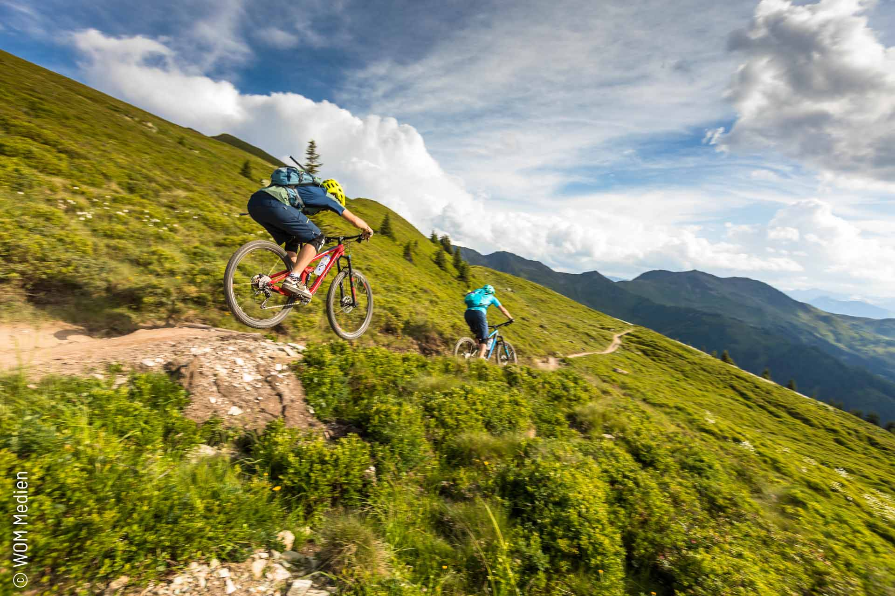
در جوامع پیشرفته و البته پر جمعیت استفاده از دوچرخه بجای
وسایل حمل و نقل شخصی و عمومی به دلیل کاهش ترافیگ و سلامت
جسمانی بسیار جاافتاده و مرسوم می باشد.متاسفانه ایران از آکبند
دسته کشور هایی است که تعداد دوچرخه سواران درآن بسیار کم
می باشد که میتواند دلایل مختلفی از جمله مسیر جداگانه برای دوچرخه
و البته عادت به زندگی ماشینی و... داشته باشد
دوچرخه سواری به عنوان یک وسیله حمل و نقل ویک ورزش مفرح.
سالم و کم هزینه می تواند در نگاه اول سلامت جسمانی و روانی
جامعه را تحت تاثیر قرار دهد و از طرفی کمک بزرگی به محیط زیست
و کاهش الودگی باشد
جدید ترین محصولات
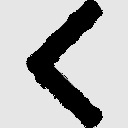
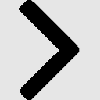
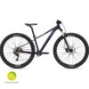
انواع دوچرخه کوهستان
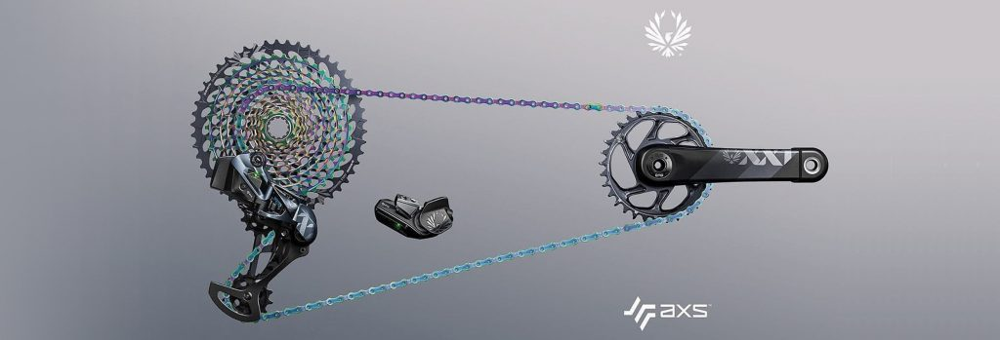
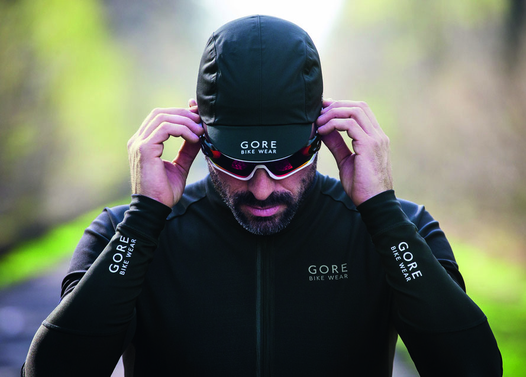
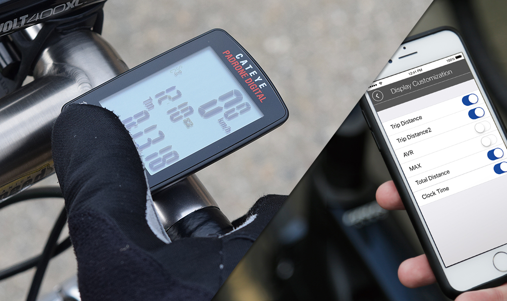
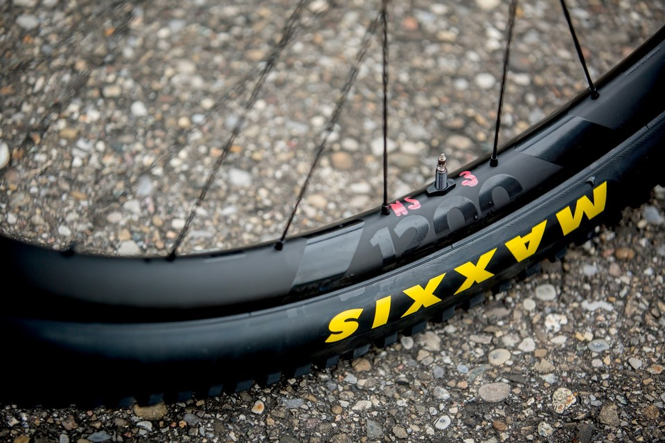
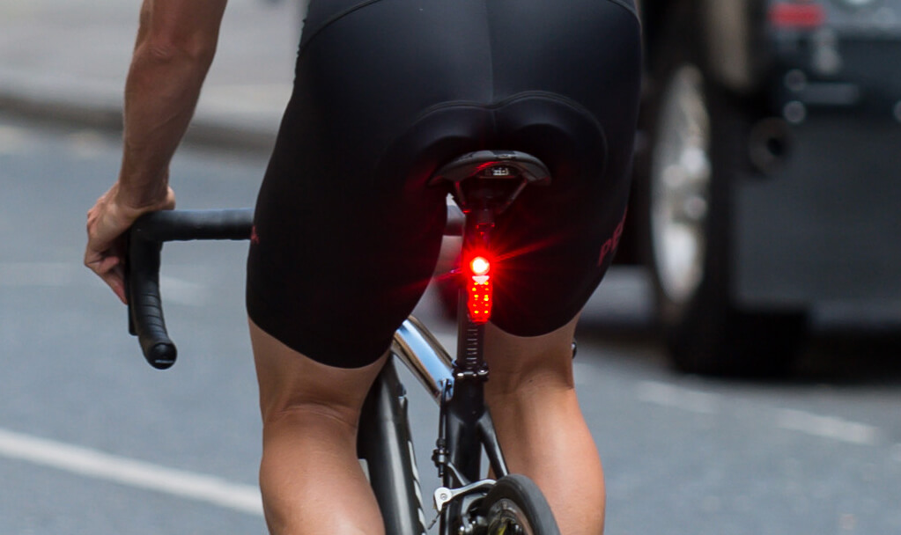
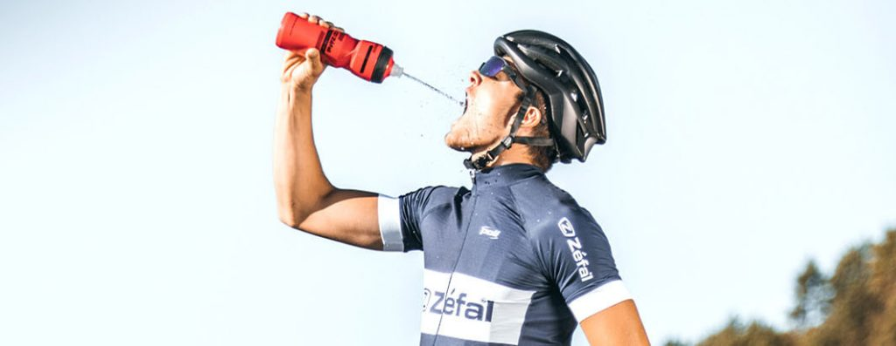
آخرین محصولات
25%
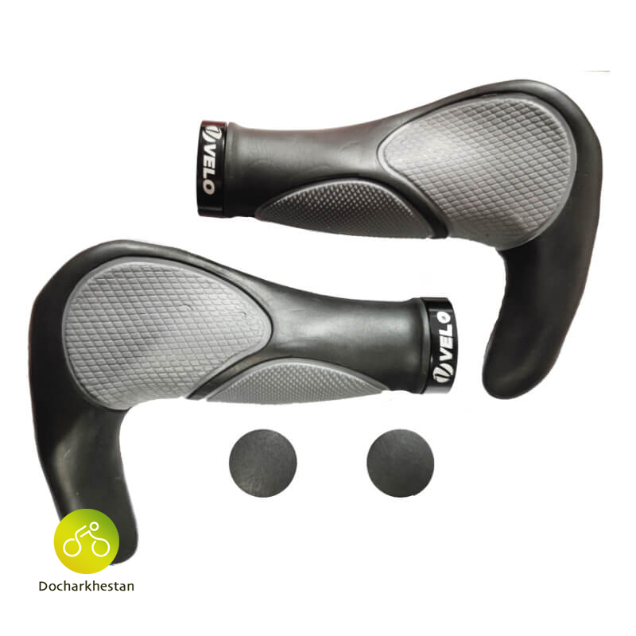
گریپ فرمان دوچرخه ولو آناتومیک
velo handlebar grip anatomic
596000تومان
دوچرخه سواری باعث افزایش طول عمر میشود
حال که تصمیم به خرید یک دوچرخه گرفتید بهتر است انتخاب کنید چه نوع دوچرخهای برایتان مناسب و ایدهآل است و چگونه باید آن را انتخاب کنید. برای اینکار در ابتدا باید بدانید چه نوع فاکتورهایی در انتخاب دوچرخه باید رعابت شود.
محصولات
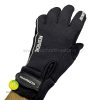
دستکش دوچرخه سواری SHIMANOO مدل NEOPRENE
539000 تومان
دستکش دوچرخه سواری SHIMANOO مدل NEOPRENE
539000 تومان
دستکش دوچرخه سواری SHIMANOO مدل NEOPRENE
539000 تومان
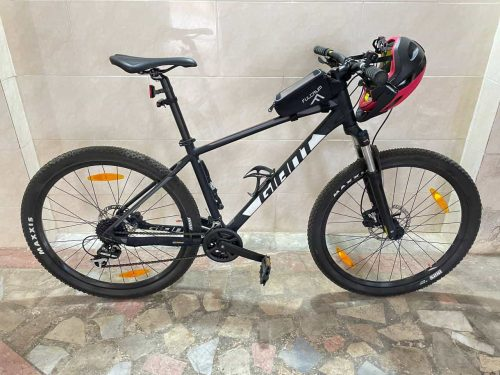
دوچرخه مدل جاینت تالون 3 کد 1
22000000 تومان
کاور کفش دوچرخه سواری زمستانه
349999 تومان
جدید ترین مقالات دوچرخستان
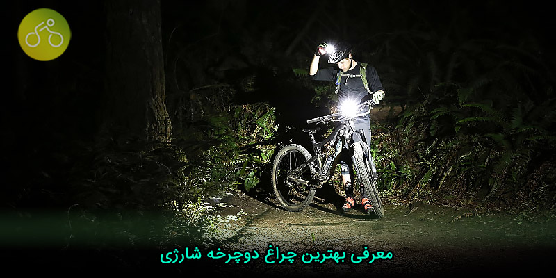
معرفی بهترین چراغ دوچرخه شارژی
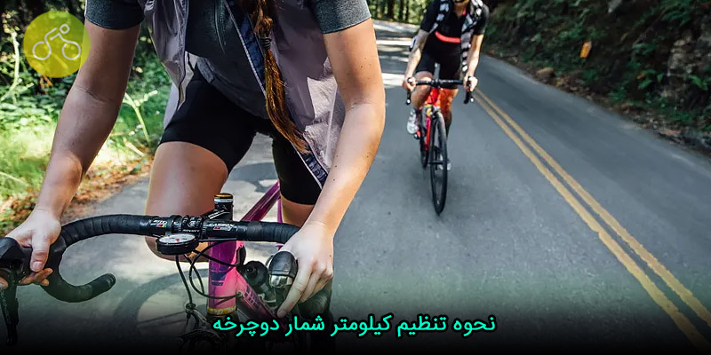
نخوه تنظیم کیلومتر شمار دوچرحه
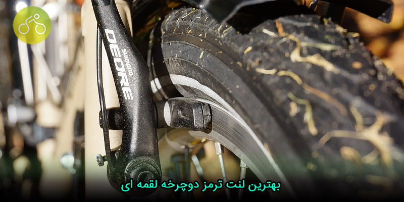
بهترین لنت ترمز دوچرخخه لقمه ای
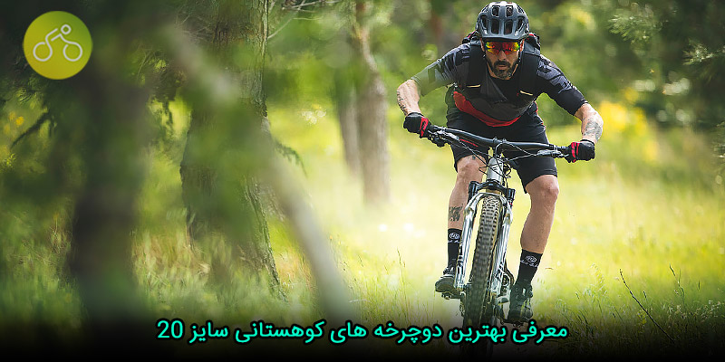
معرفی بهترین دوچرخه های کوهستانی سایز 20
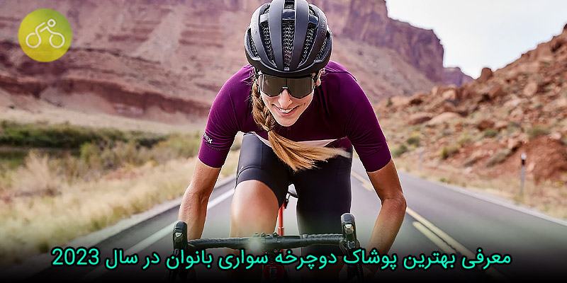
معرفی بهترین پوشاک دوچرخه سواری بانوان در سال 2023